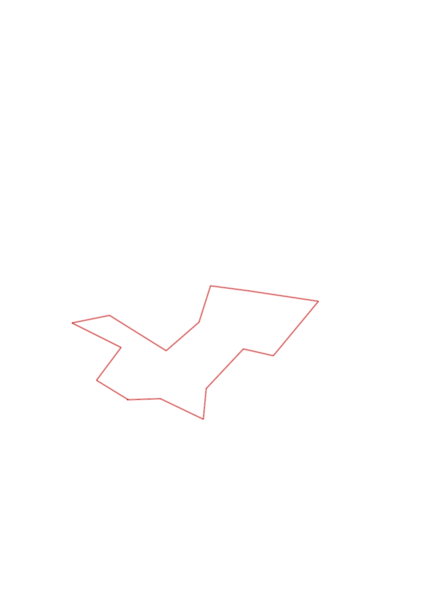
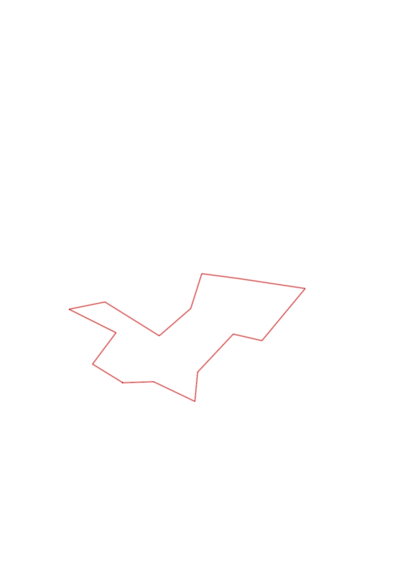

| Control |
Points |
Time Punched |
Distance |
Your Time |
Pace |
Place |
Fastest Time |
Median Time |
% Behind Fastest |
| 63 |
60 |
|
0.24 |
0:02:02 |
08:28 |
6 / 13 |
0:01:34 |
0:02:05 |
29% |
| 54 |
50 |
|
0.35 |
0:03:57 |
11:17 |
3 / 9 |
0:03:08 |
0:04:37 |
26% |
| 80 |
80 |
|
0.22 |
0:03:10 |
14:23 |
5 / 11 |
0:02:23 |
0:03:30 |
32% |
| 48 |
40 |
|
0.4 |
0:03:14 |
08:05 |
5 / 10 |
0:02:29 |
0:03:23 |
30% |
| 60 |
60 |
|
0.22 |
0:03:06 |
14:05 |
8 / 8 |
0:02:05 |
0:02:34 |
48% |
| 81 |
80 |
|
0.52 |
0:04:40 |
08:58 |
6 / 11 |
0:03:21 |
0:04:40 |
39% |
| 59 |
50 |
|
0.51 |
0:06:20 |
12:25 |
1 / 2 |
0:06:20 |
0:06:30 |
0% |
| 36 |
30 |
|
0.28 |
0:03:12 |
11:25 |
2 / 6 |
0:02:35 |
0:03:26 |
23% |
| 91 |
90 |
|
0.28 |
0:03:56 |
14:02 |
1 / 5 |
0:03:56 |
0:04:09 |
0% |
| 41 |
40 |
|
0.32 |
0:04:08 |
12:55 |
3 / 7 |
0:02:38 |
0:04:19 |
56% |
| 58 |
50 |
|
0.49 |
0:05:19 |
10:51 |
3 / 4 |
0:04:25 |
0:05:15 |
20% |
| 72 |
70 |
|
0.28 |
0:05:30 |
19:38 |
9 / 9 |
0:01:47 |
0:02:29 |
208% |
| 51 |
50 |
|
0.4 |
0:04:27 |
11:07 |
1 / 1 |
0:04:27 |
0:04:27 |
0% |
| 35 |
30 |
|
0.3 |
0:03:20 |
11:06 |
6 / 8 |
0:02:08 |
0:02:40 |
56% |
| Finish |
0 |
|
0.27 |
0:01:40 |
06:10 |
7 / 10 |
0:01:23 |
0:01:33 |
20% |
Total Distance Covered: 5.08km
Points Scored: 780
Late Penalty: 0
Final Score: 780
Total Time: 0hours 58minutes 1seconds
Efficiency: 153.54 points/km
 
